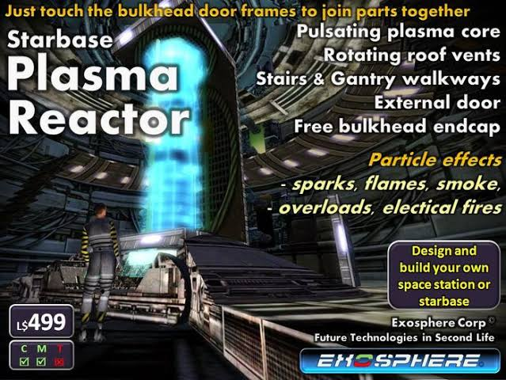
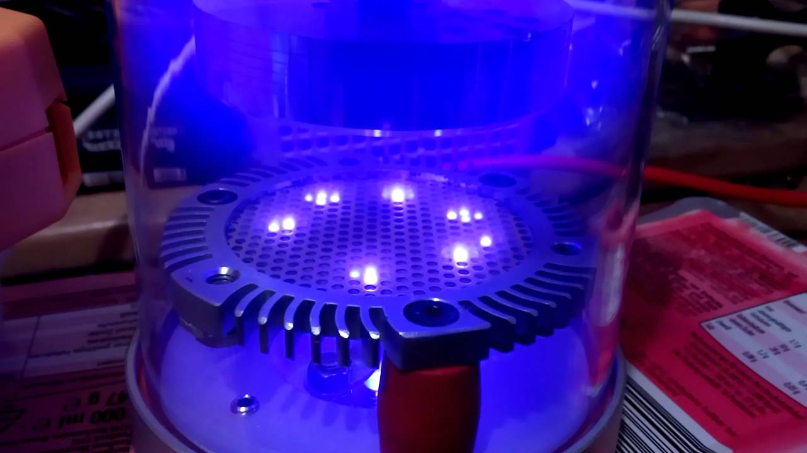
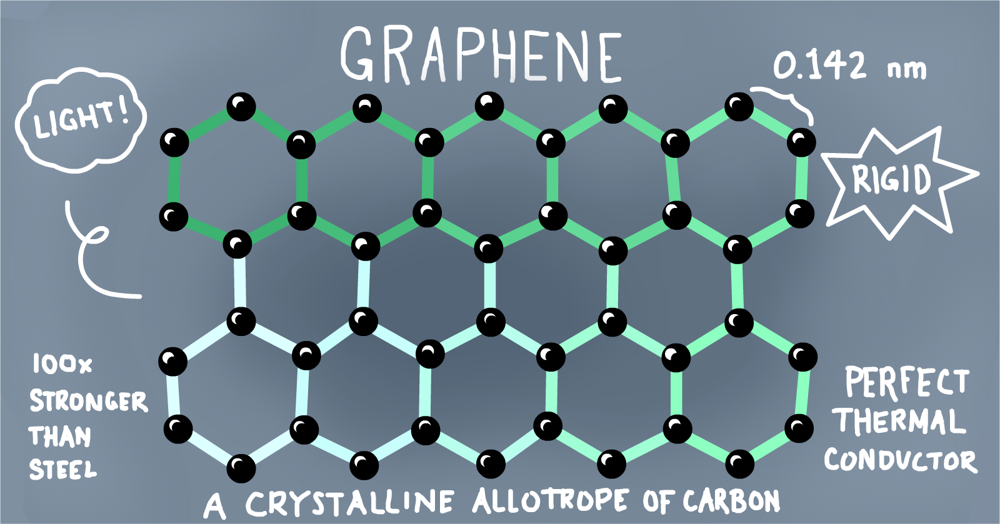
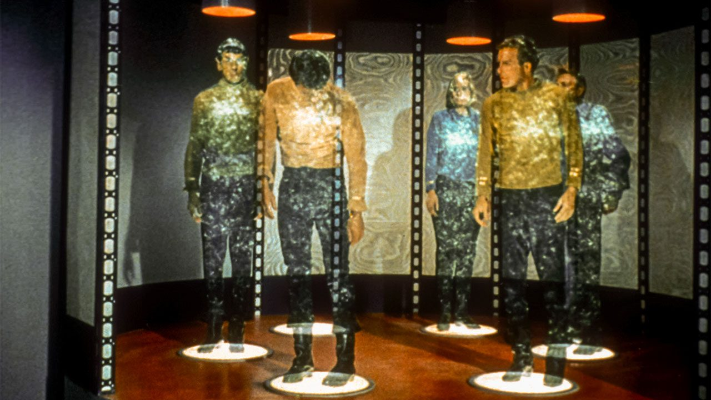
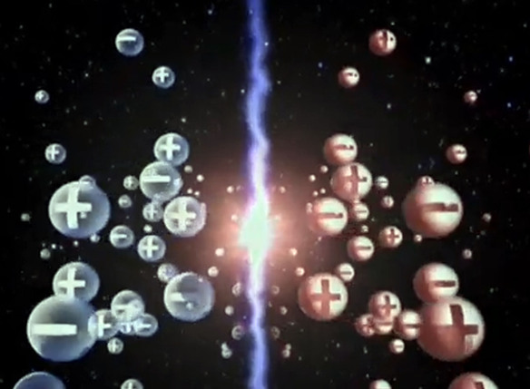
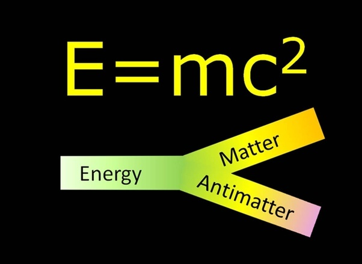

Plasma Reactor
 Plasma Reactor in plasma chemistry and metallurgy, a unit of an assembly in which heat- and mass-transfer processes are carried out with the participation of a low-temperature plasma. The term “plasma reactor” is sometimes applied not only to an individual unit but to a plasma assembly as a whole. The basic requirements of plasma reactors are (1) attainment of an adequate mixing of the reagents, (2) provision of an adequate extent of the zone of interaction, and (3) provision of conditions for efficient heat transfer and mass transfer with minimum heat losses.

//Artificial_Intelligence
Artificial Intelligence
The rapid development of technologies close to artificial intelligence, observed right now, will lead to the fact that AI will surpass the man in almost all spheres of activity already by 2060 – believe the staff of the Institute of the Future of Humanity, existing at Oxford University. British scientists are in agreement with their American colleagues – researchers from Yale University. AI already now can get ahead of the person in many problems. For example, AlphaGo several times beat the best human players in go. Other systems better read on the lips of people or help detectives understand the police information. But each of the modern intellectual systems is good only in one thing and is useless in all other directions, unless it is taught to them. As the same researchers say, AI with a humanoid versatility will not appear soon.
//Graphene
Graphene
Graphene is basically a substance which is 300 times stronger than steel and made of only a thin layer of pure carbon, making it literally as light as a feather. Each sheet of graphene is only one atom thick, and one square meter weighs just 0.77 milligrams. In 2010 the Nobel Prize for Physics went to scientists researching this super film, and in 2013 a 1 billion dollar grant was awarded by the EU to researchers in the field.
//Atmospheric_electricity
Atmospheric Electricity
Atmospheric Electricity Generation: Is this “true energy” the sleeping giant of renewables?
A company called SEFE says that it will soon be able to generate a limitless supply of renewable energy by converting static electricity from the atmosphere into direct current.
Ever since Benjamin Franklin and his kite, we have been aware of the electrical power that is statically and consistently present in great magnitude between the negatively charged earth and the positively charged atmosphere.
Over the years (famously beginning with Nikola Tesla) there have been many attempts at
harnessing this latent energy for practical use.
But no one has been able to harness it in a practical way...until now
perhaps? From the (nicely designed and informative) SEFE website:
//quantum_teleportation
Quantum Teleportation
Researchers at the National Institute of Standards and Technology (NIST) have now managed a significant breakthrough by ‘teleporting,’ or transferring, quantum information from one photon to another over a distance of 63 miles of optical fiber. This is 4x farther than the previous record. The research is published in the journal Optic.
The experiment confirmed that quantum communication is feasible over long distances in fiber, while other institutes and researchers have teleported quantum information over longer distances in free space. Fiber-optic lines offer much more flexibility for network design solutions.
//antimatter
Antimatter
Antimatter is the Bizarro twin of matter, made up of antiparticles that have the same mass as ordinary matter but with opposite atomic properties known as spin and charge. When the opposed particles meet, they annihilate each other and release tremendous amounts of energy as dictated by Einstein’s famous equation, E=mc2.
